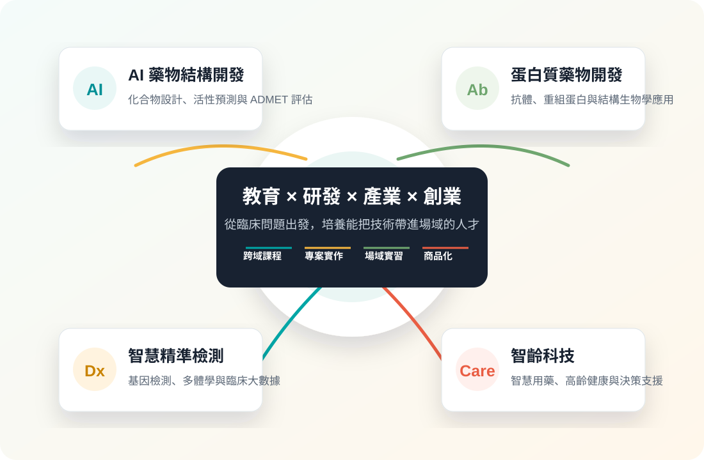
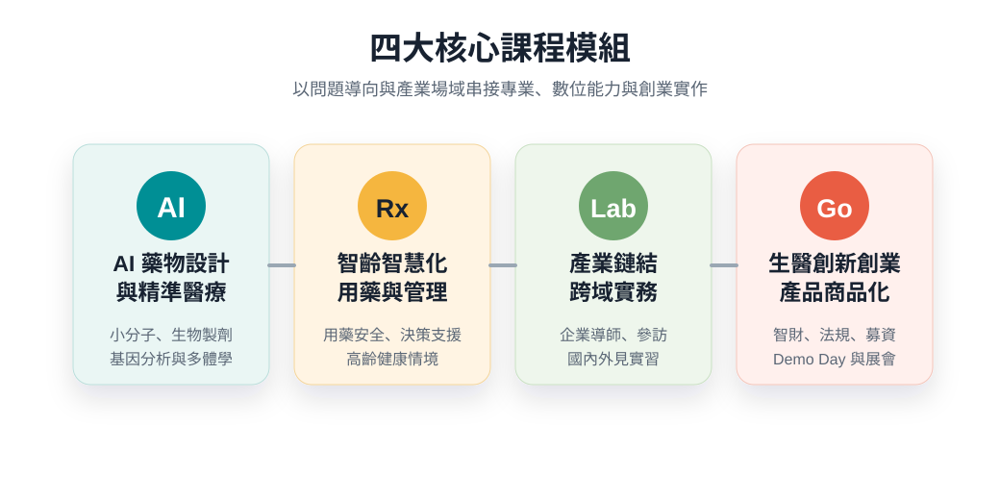

教育
跨域課程、數位教材、EMI/ESP 與案例教學，降低跨領域學習門檻。
115年度｜臺北醫學大學
以 AI 藥物結構開發、蛋白質藥物開發與智慧精準檢測為核心，串聯教育、研發、產業與創業，培育具國際競爭力的智慧健康跨域人才。

Program Vision
臺北醫學大學推動教育部「智慧健康產業跨領域生技人才培育計畫」精準醫療領域，聚焦精準醫療與 AI 藥物開發，透過課程、專案、實習與創業輔導，讓學生從理解臨床痛點開始，一路走到技術驗證與產業轉譯。
計畫以臺北醫學大學醫學科技學院為推動核心，整合校內研究能量、附屬醫院臨床場域與產業合作網絡，培育能理解臨床需求、掌握數位科技並具備成果轉譯能力的智慧健康人才。
跨域課程、數位教材、EMI/ESP 與案例教學，降低跨領域學習門檻。
整合 AI、結構生物學、多體學、臨床大數據與分子診斷。
導入企業導師、場域參訪、CRO 與藥廠實習，縮短學用落差。
串聯 TMU SPARK、創創中心與加速器，推進智財、法規與募資。
Core Strengths
以醫科院、附屬醫院、數據平台、加速器與雙和生醫園區形成教學、驗證與轉譯場域。

涵蓋化合物設計、活性預測、ADMET 評估、蛋白質結構模擬與抗體藥物開發。
結合基因檢測、單細胞定序、多體學分析與臨床資料，建立疾病分型與藥物反應分析能力。
運用真實世界資料、電子病歷與健康物聯網，推動智慧化用藥管理與高齡健康應用。
Curriculum
課程設計以「臨床需求、數位科技、產業場域、成果轉譯」為主軸，讓學生不只學會工具與知識，也能理解技術如何回應醫療問題、進入企業流程並走向商品化。
從疾病偵測、檢驗、治療、用藥管理與高齡健康需求出發，訓練學生把生醫問題轉譯成可執行的研究與產品命題。
導入 AI 藥物設計、蛋白質結構模擬、單細胞與多體學分析，建立跨資料、跨技術的精準醫療能力。
邀請藥廠、CRO、檢測與醫療 AI 產業專家進入課堂，搭配企業參訪、專案練習與見實習。
以 AI 驅動的新藥與診斷研發為核心，串聯小分子藥物、蛋白質與抗體藥物、基因分析及多體學資料，訓練學生從資料判讀、模型建立到臨床轉譯的完整思維。
學習產出完成一份 AI 藥物或精準醫療分析提案，說明資料來源、方法選擇、驗證策略與臨床價值。
面對超高齡社會的用藥安全與慢病照護需求，課程導入真實世界資料、電子病歷、健康物聯網與臨床決策支援概念，培養能整合醫療、照護與數據分析的人才。
學習產出提出一個高齡用藥或健康管理情境方案，包含使用者需求、資料欄位、風險指標與服務流程。
課程以企業導師、產業參訪與小組專案為核心，帶學生理解生技醫藥產業鏈中的研發、檢測、臨床試驗、品管、專案管理與市場分析。
學習產出完成產業專案簡報，呈現市場定位、技術可行性、成本估算與團隊分工。
以「跨域合作、專案導向、創業實戰」三階段設計，協助學生把研究成果或臨床痛點轉化為具市場邏輯的產品、服務或新創提案。
學習產出完成商業計畫書與募資簡報，並透過 Demo Day 或競賽形式接受專家回饋。
Two-Year Roadmap
建置跨域高階課程與數位教材，導入業界師資，啟動國際交流與海外見實習，建立學生在 AI、藥物開發、精準醫療與智齡科技的共同語言。
以專案導向課程、創業育成與國際實戰驗證，將學習成果轉化為具臨床價值與市場潛力的產品、服務或新創提案。
Industry & Global Network
北醫持續與國內外企業、法人、藥廠與國際學研單位建立合作網絡，並以附屬醫院、事業發展處、數據處、醫學模擬教育中心與生醫加速器支援場域驗證與成果轉譯。
AI 藥物設計、生技製藥、CRO、精準檢測、醫學資訊、國際藥廠。
Sunway University、Taylor's University、i3L，以及 MIT、Stanford、Oxford 等合作網絡。
TMU SPARK、創新創業教育中心、生醫加速器、投資媒合與 Demo Day。
修課率、實習參與率、競賽成果、專利技轉、新創成立與跨國合作案例。
Leadership
由醫學科技學院作為跨域整合平台，串聯校內教師、臨床與數據資源、產業顧問、創業輔導與計畫辦公室，形成能支援課程、實習與成果轉譯的推動架構。
負責整體課程規劃、跨系所協調、教學品質與人才培育方向。
整合藥物研發、癌症生物、醫學資訊、醫檢生技、神經醫學與轉譯醫學專長。
連結附屬醫院、人體研究、數據平台與醫學模擬教育場域。
導入藥廠、CRO、精準檢測、醫療 AI 與生技新創的實務經驗。
支援智財布局、技術移轉、商業模式、募資簡報與投資媒合。
Contact
如需課程合作、產業見實習、國際交流或創新創業輔導，可由臺北醫學大學醫學科技學院計畫辦公室協助接洽。
聯絡人錢佩君 Peggy Chien
單位臺北醫學大學｜醫學科技學院｜院經理
電話02-6620-2589 分機 11202
Emailpeggy@tmu.edu.tw